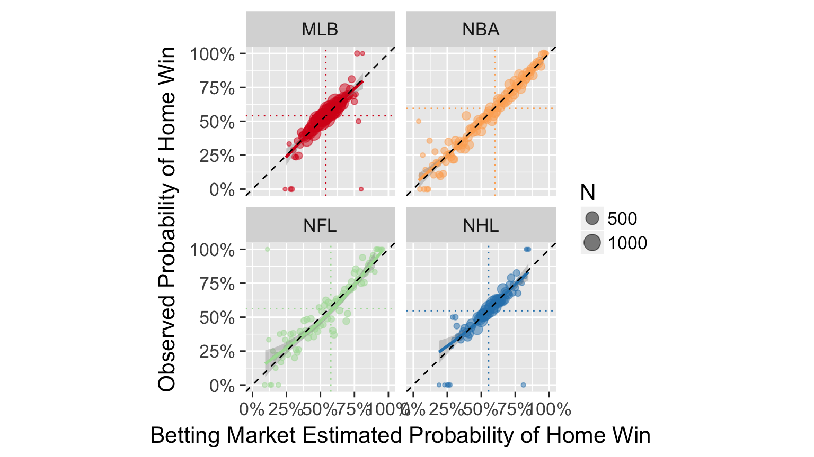
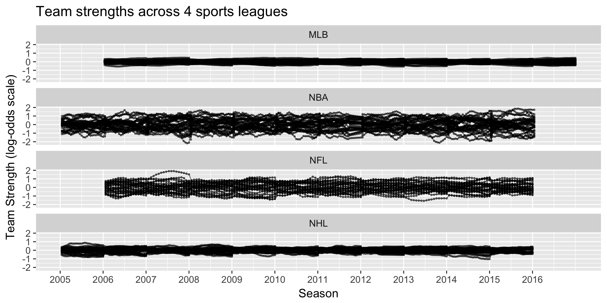
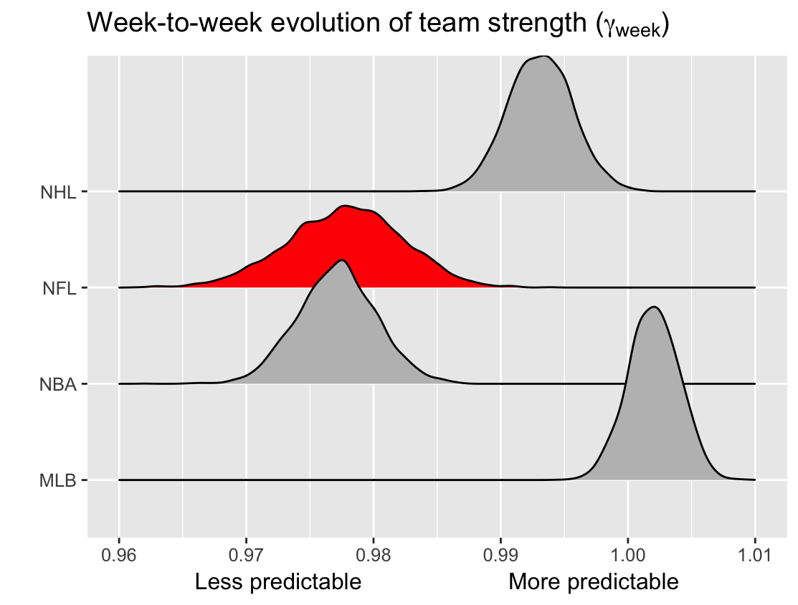

What we remember

What we forget

A closer look

A closer look
- About 80% of pitches taken at this location called a strike (using advanced modeling)
- Walk worth about 12% in win expectency (32% to 44%)
- Red Sox were lucky!
What we forget

A closer look
- Jose Iglesias: 98.5% fielding percentage (Note: Statcast data unavailable)
- Error worth about 20% in win expectency over out at second (36% to 56%)
- Red Sox were lucky!
A closer look
Two huge swings in win probability that were outside the Red Sox control

1. Assess parity in professional sports
How to define parity
the state or condition of being equal
Google
1. Assess parity in professional sports
What parity looks like:

1. Assess parity in professional sports
What parity does not look like:

1. Assess parity in professional sports
Parity checklist
- Equality at a fixed time
- Within season equality
- Between season equality
Building a cross-sport model
- \(p_{(q,s,k)ij}\) is probability that team \(i\) will beat team \(j\) in season \(s\) during week \(k\) of sports league \(q\), for \(q \in \{MLB, NBA, NFL, NHL\}\).
- \(\alpha_{q_{0}}\) be the league-wide home advantage (HA) in \(q\)
- \(\alpha_{(q) i^{\star}}\) be the extra effect (+ or -) for team \(i\) when playing at home
- \(\theta_{(q,s,k) i}\) and \(\theta_{(q, s, k) j}\) be season-week team strength parameters
Building a cross-sport model
\[ E[\text{logit}(p_{(q,s,k) ij})] = \theta_{(q,s,k) i} - \theta_{(q, s, k) j} + \alpha_{q_0} + \alpha_{(q) i^{\star}} \]
Assumptions:
- \(\sum_{i=1}^{t_{q}} \theta_{(q,s,k)i} = 0\)
- \(E[\theta_{(i,q,s+1,1)}] = \gamma_{q, season} \theta_{(i, q,s,k)}\)
- \(E[\theta_{(i,q,s,k+1)}] = \gamma_{q, week} \theta_{(i, q,s,k)}\)
- \(\gamma_{q,week}\) and \(\gamma_{q,season}\) week/season level autogressive parameters
Fitting a cross-sport model
Data: 2006-2016 regular season games in MLB, NBA, NFL, NHL via Sports Insights
Priors: Uniform (variance parameters) and Normal (team strength parameters)
Software: rjags package in R statistical software
Draws: 20k iterations, 2k burn in, thin of 5
Team strength results

NFL’s parity: unpredictability at a fixed point in time
How often does the best team win?

NFL’s parity: unpredictability by season

NFL’s parity: unpredictability by week

NFL systems that impact perceived parity
- Small number of games
- Single elimination tournament
- Unbalanced schedule (focus of today)
Effect of NFLs unbalanced schedule
2 games per year against like-placed teams from prior year (I’ll call them “crossover” games).
\(Hypothetical\): What if league-average teams were played instead?
\(Approach\): Use team strength estimates to approximate change in expected wins
Effect of NFLs unbalanced schedule
Conclusion
Does NFL have parity? Not particularly
Conclusion
Do NFL systems push records to 0.500? Sort of
Acknowledgements: Greg and Ben